Пусть {Х(m)} обозначает последовательность Х(m), m= 0, 1, N—1, получаемую в результате дискретизации сигнала x(t) с ограниченной полосой частот. Требуется
получить алгоритм для вычисления
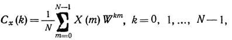
где 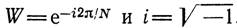
6.2. Вывод алгоритма быстрого преобразования Фурье (БПФ).
Выведем алгоритм БПФ из алгоритма ДПФ.
Дискретное преобразование
Фурье для вектора 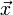
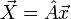
элементы матрицы 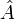 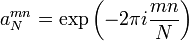
Пусть N четно, тогда ДПФ
можно переписать следующим образом:
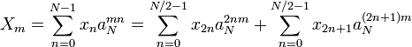
Коэффициенты 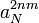 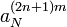
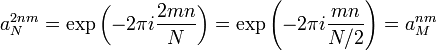
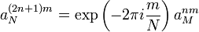
В результате получаем:
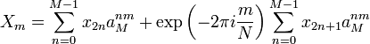
То есть дискретное
преобразование Фурье от вектора, состоящего из N отсчетов, свелось к линейной
композиции двух ДПФ от 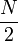 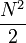
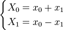
Объем вычислений. Из (4.1.1) следует, что Cx(k) можно вычислить в результате умножения матрицы размером (N*N), составленной
из степеней W, на N-мерный вектор исходных данных. Число
арифметических операций (т. е. комплексных умножений последующим сложением или вычитанием)
в этом случае примерно 2N2. Такой метод вычисления коэффициентов ДПФ
будем называть «прямым методом». Использование БПФ приводит к log2 итерациям,
и общее число требуемых арифметических операций станет равным примерно Nlog2N.
Из приведенных выше рассуждений
видно, что общее число арифметических операций, требуемых для вычислений по прямом
методу и по алгоритму БПФ, пропорционально N2 и N соответевенно. Следовательно,
по мере возрастания N повышается экономичность БПФ по сравнению с прямым методом.
Это видно на рис. 6.1, на котором tдпф и tбпф — время выполнения
вычислений по прямому методу и по алгоритму БПФ соответственно. На рис. 6.1 получаем,
что 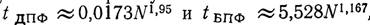
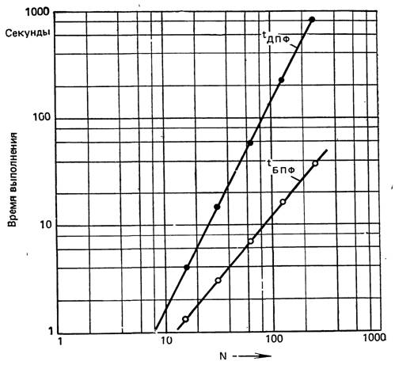
Рис. 6.1. Сравнение времени
при прямом вычислении ДПФ и при вычислении с помощью алгоритма БПФ
Объем памяти. Для обработки исходных данных (которые предполагаются комплексными)
с помощью алгоритма БПФ требуется 2N ячеек оперативной памяти. Поэтому выходной
массив, получающийся в результате проведения некоторой итерации, может храниться
в тех же ячейках памяти, что и исходный массив, обрабатываемый на этой итерации.
Процедура перестановки данных может потребовать дополнительно 2N ячеек памяти.
Таким образом, для алгоритма БПФ необходимо примерно AN ячеек оперативной памяти.
В противоположность этому прямой метод требует приблизительно 2N2 ячеек
памяти, так как необходимо запомнить N2 значений степеней W. Следовательно,
требования по объему памяти для алгоритма БПФ значительно ниже, чем для прямого
метода.
Ошибки округления. Алгоритм БПФ значительно уменьшает ошибку округления, связанную
с арифметическими операциями. По сравнению с прямым методом алгоритм БПФ снижает
ошибку округления в N/(log2N) раз.